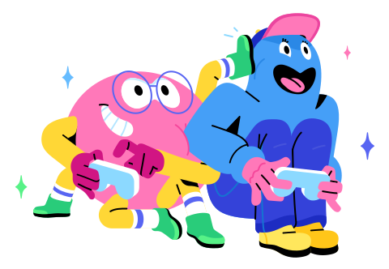

Our story
Discord is about giving people the power to create space to find belonging in their lives. We want to make it easier for you to talk regularly with the people you care about. We want you to build genuine relationships with your friends and communities close to home or around the world. Original, reliable, playful, and relatable. These are the values that connect our users and our employees at Discord.

Prologue
Discord was started to solve a big problem: how to communicate with friends around the world while playing games online. Since childhood, founders Jason Citron and Stan Vishnevskiy both shared a love of video games, cherishing the friendships and connections that formed while playing them. At the time, all the tools built for this job were slow, unreliable, and complex. Jason and Stan knew they could make a better service that encouraged talking, helped form memories, and recreated the feeling of togetherness all found through gaming.
Chapter One
So, in 2015, Stan and Jason started to bring Discord to life. People from all over the world loved it. Discord made it easy to genuinely communicate with friends, going beyond casual talking. Friends were staying in touch with their various communities. Discord was making it easy to participate in conversation, hopping around text, voice and video to talk. The technology was complex but the goal was simple: make Discord an inviting and comfortable home to jump into with your communities and friends. Within a few years, Discord began to take off, and devoted people who loved our product sprung up around the world.

Hop in when you're free, no need to call
Easily hop in and out of voice or text chats without having to call or invite anyone, so your party chat lasts before, during, and after your game session.
Make your group chats more fun
Use custom emoji, stickers, soundboard effects and more to add your personality to your voice, video, or text chat. Set your avatar and a custom status, and write your own profile to show up in chat your way.